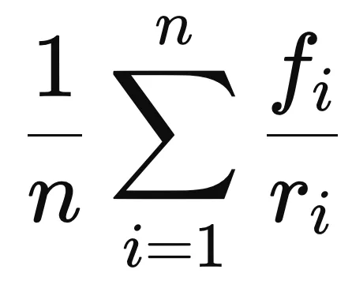

Get your Days Worth of Days
Have you ever thought something happened last week, but it was really a month ago? Thought something happened a month ago, but was really four months ago? You may only be living a quarter of a day per day.
The formula of how much day per day you’re living is as follows:

Say that for each event you observe, it feels like it happened f days ago, but really happened r days ago. Take some n events in the last period of time you want to examine.
As a shortcut, just take one event and divide how long ago it feels like it happened by how long ago it really happened.
You should be left with a value that is the “number of days per day” you’ve lived in this period. For example, if something happened 7 days ago but it feels like it happened four weeks ago, you lived a month’s worth of experiences in that week, putting your ratio at 4. This is a great score! However, if your values are below 1, that means you’re living less than a day every day. An instance of this happening would be if you thought you went out to dinner last week, but it was really a month ago. That means that in the last month, you only had enough events to feel like it was a week.This assumes that how long ago things feel depends on how many things have happened since then, but I feel like this is true for me. However, one could be extremely busy their entire life and be accustomed to this, and so even if they’re living a lot per day, they feel like they’re living a normal amount.When I moved to NYC and started working, I didn’t have habits or a strong social group in the city, so it was hard to find events to do. After being there for a few months, I made a rule that I had to do something outside of my routine every single day. After this, my day-per-day ratio increased significantly. Traveling, my ratio is pretty high, averaging around 3 days per day. I try to live my life in a way that keeps this ratio as high as possible. Whenever I finish a day and feel like I only got a half a day out of it, I feel bad about wasting it. Lately, instagram reels has been dragging down my ratio.
Unless you’re working 12+ hour days or have huge time commitments like kids, I think many people have the ability to increase their ratio. If you feel like you’re missing time, you’re not. The time is still there - you just need to fill it differently.